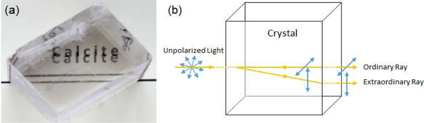

Optics
Anything to do with light.
Polarization Interferometry
 (Source: Akihiro Yamaguchi's thesis)
Calcite crystals are naturally occurring polarization analyzers. The best way to teach about polarization (at least, linear polarization) is to hand these out in class (along with a linear polarizer). In 2013, my advisor Prof. Mike Raymer happened to be creating a pilot course for nonmajors under the Science Literacy Program, called "Quantum Mechanics for Everyone", and had asked Chris Jackson and me to help design and TA the course. Naturally, I accepted. And calcite crystals came in real handy there. Then it eventually came to designing a lecture on interferometry.
Prof. Mark Beck, in his book titled "Quantum Mechanics," illustrated a very simple interferometer that can be constructed with these. So I bolted some components onto an optical table and went to work. The demo worked great. The students were particularly baffled by the counter-intuitive phenomenon of blocking light in one path to make light appear in another.
We had to buy big, clear, well-polished, research-grade calcite crystals from a commercial company. The half-wave plate inbetween the first two was required to reduce the path difference between the two arms to within the miserable coherence length of that cheap ebay diode laser. I also had to use a pinhole and several lenses to do some spatial mode filtering. My advice, just use a HeNe laser and avoid the whole mess.
Laser-pointer microscope
One of the easiest demos ever. Just point a laser pointer at a suspended water droplet and watch the projected shadow image. You should see silhouettes of tiny particles and/or organisms. For scale, you can use the spacing between the diffraction fringes around the silhouettes. Higher frequencies (UV lasers?) will have smaller wavelength and larger resolution. Some people online have managed to image moving creatures using pond water with these!